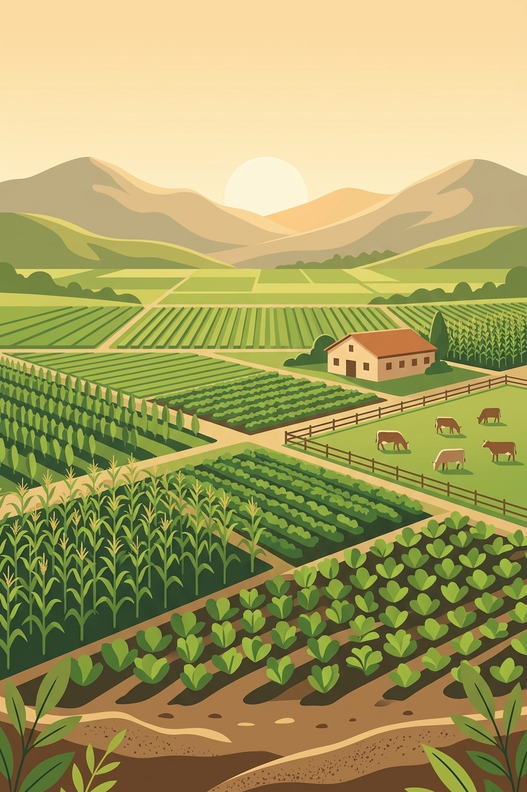

Crea tu cuenta
Descarga la app en tu Android. Crea tu cuenta y verifica tu correo para comenzar.
Registra tus cultivos, controla el crecimiento de tus cerdos y consulta la actividad de tu finca desde MilpaGrow.

Consulta la actividad de tu finca.
MilpaGrow reúne los registros de cultivos, animales y movimientos de tu finca. Puedes consultar monitoreos, pesajes y transacciones sin llevar cada área por separado.
Desarrollada por NEREON para dueños y productores de fincas agrícolas, porcinas o mixtas. Incluye a Milpi, un asistente con inteligencia artificial para consultas sobre la finca.
Consultar funcionesConsulta qué puedes registrar
en cada área de MilpaGrow.
Registra tus cultivos, sus variedades y la superficie sembrada. Guarda monitoreos, observaciones y fechas para consultar el desarrollo de cada parcela.
Conoce a Milpi, tu asistente digital. Conversa sobre tus cultivos, el cuidado porcino y los cálculos de la finca, con orientación clara y fácil de entender.
Te acompaño con orientación sobre cultivos y manejo de tu finca. Cuéntame qué estás cultivando y qué has observado para comenzar.
Conversación ilustrativa. En la app, Milpi ofrece orientación y conserva tu historial; el chat no cambia tus registros automáticamente.
Instala la app y registra tu finca.
Descarga la app en tu Android. Crea tu cuenta y verifica tu correo para comenzar.
Crea tu finca agrícola, porcina o mixta, o solicita unirte a una como productor.
Añade tus cultivos o animales, guarda su seguimiento y consulta a Milpi cuando lo necesites.
Para dueños y productores de fincas agrícolas, porcinas o mixtas. Las herramientas disponibles se adaptan al tipo de finca y a los permisos de cada miembro.
Un dispositivo con Android 7.0 o superior, un correo electrónico para verificar tu cuenta y conexión a internet para acceder a los servicios y herramientas de inteligencia artificial.
Descarga el archivo con el botón de abajo y ábrelo desde las descargas de tu Android. Si el teléfono lo solicita, permite a tu navegador instalar esta aplicación y sigue los pasos de instalación. Después puedes desactivar ese permiso.
Desde el monitoreo de un cultivo puedes tomar o seleccionar una foto de la planta para recibir un análisis con inteligencia artificial. Necesitas permiso para crear diagnósticos; puedes consultar el resultado y conservar el seguimiento en la app.
Sí. Los productores pueden solicitar acceso desde el directorio de fincas. El dueño revisa las solicitudes y asigna la participación y los permisos de cada integrante.
Solicita una demostración con el equipo de NEREON. Te mostramos cómo organizar tus cultivos, porcinos y registros con MilpaGrow.
Instala la app en tu teléfono
y comienza a registrar tu finca.
Regístrate o inicia sesión y confirma el código de tu correo para descargar.